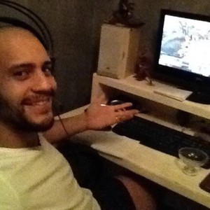

From Sports to Technology!!
But who am I?
 |
 |
My name is Dalton Ramiro im 33 years old and I came from Brazil. I been living in Östersund since 2011, with my wife and 2 children.
I left Brazil back in 2008. At first I moved to Australia so i could learn English, also because I had a passion for the place.
Who wouldn't? Sydney is a beautiful place full of atractions, wonderful beachs and a place with a multi cultural background.
For the last 11 years i been working within the Fitness Industries.
I started back in 2005 when i got my first job as Life Saver, at that time i had started my Phisical Education Degree.
But all started to change in 2006 when i was offered a position as a Gym instructor in a local but small gym.
I really enjoyed that type of work and I had the chance to put in practice all that I was learning in the University.
But I felt that something was not complete. Inside me I had another desire, even having passion for what I was doing I also had passion for something else.
I'm being a computer user since I was 12 years old, always had the passion and interest how it worked, from hardware to software.
so I tried to become a computer engineer around 2003 but I failed on that attempt due my lack of commitment and responsibility.
even that i failed back in time, the desire never left me. Around September of 2017 that desire started to grow again and I decide to get back on the trail.
Now being and Adult was easier to find focus and motivation to try even harder, and this time i took my chance. I saw my opportunity in Hermods.
Now that im older I can dedicate my time wisely and effectively to help myself in achieve something greater. For my family future and for my own happiness.
I think this is my mission and every step i take ,I see clear where I have to walk to achieve my goals.
Most of my spare time on weekends I spend with my family.
I also spend a great deal of my time using my computer for entertainment and learning.
Some of my favorite games!
Some games that i play!
- Smite - Battleground of Gods
- The Witcher
- Dark Souls 3 (new)
- Warframe
Some of my favorite Food!
Like everybody I really enjoy food!
- Thai Food
- Brazilian BBQ
- Spanish Tapas and churros
- Japane Sushi
- Hamburguers and Pizza
Some extra skills and hidden talents!
just other hobbies that i have!
- Play Musical Instruments
- Sculputures and manual crafting
- Cooking
- Drawing
My Favorite quote :
"It's not enough that we do our best; sometimes we must do what is required."
( Winston Churchill)